🗑️➡️📄 Paper Crumple Effect
SwiftUI procedural geometry — from tight ball to flat card
SwiftUI
iOS 16+
Shape + Canvas
LeaveHack feature
🔥 V2 — iPhone Prototype
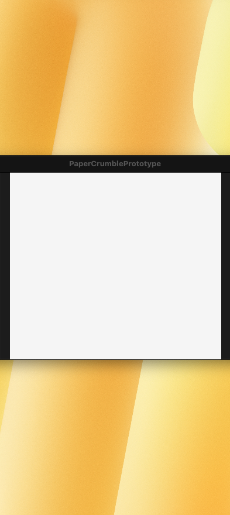
Crumpled — text visible, creases inside
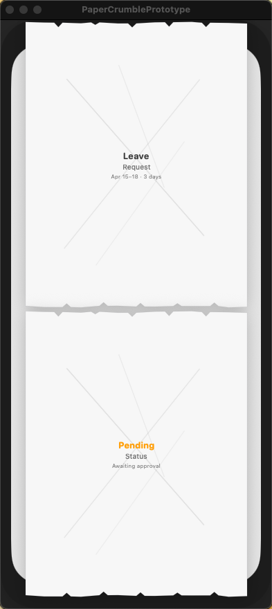
Flat — torn paper cut-out edges
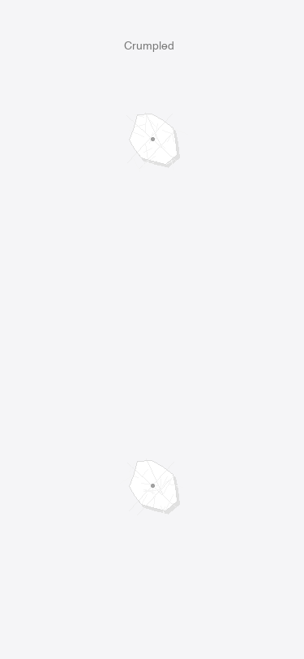
Ball — "Leave" readable
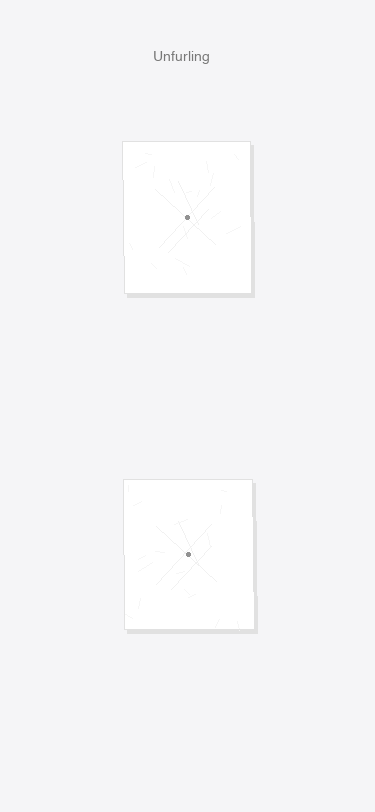
Rough — "Pending" emerging
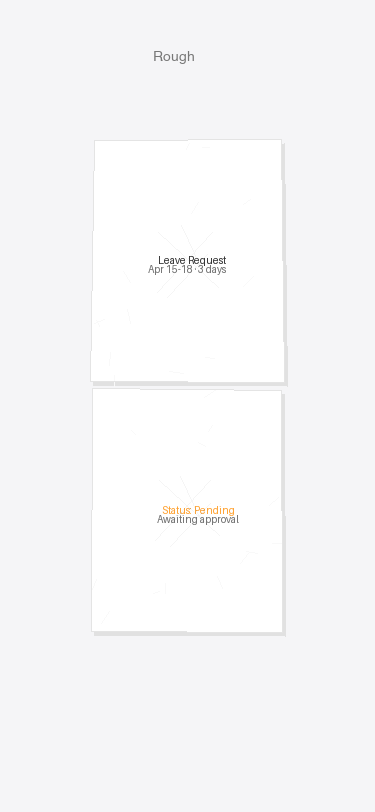
Warped — detail lines fade in
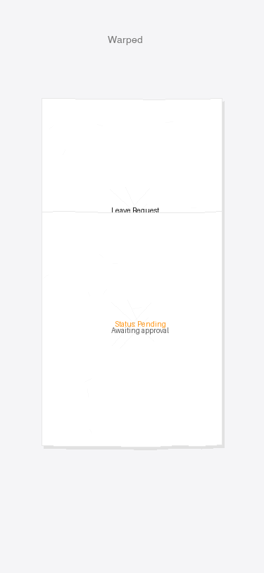
Near Flat — torn edges appear
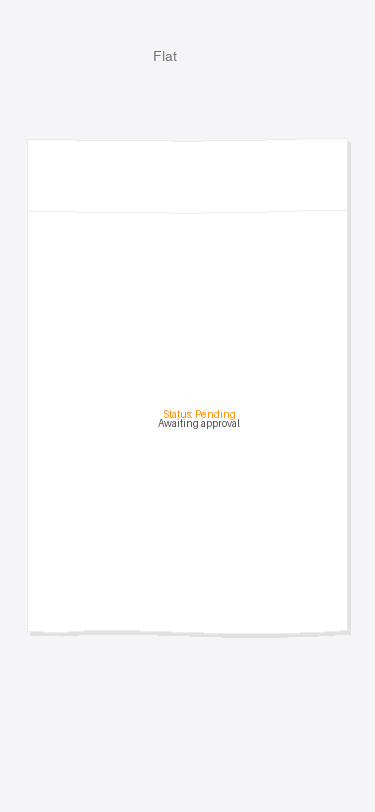
Flat — full card, cut-out edges
V2 What's New
- iPhone device frame — 393×852 iPhone 14 Pro chassis with Dynamic Island, black bezel, and shadow
- Two-card layout — upper-center card (Leave Request) and lower card (Pending status) per Figma spec
- Torn paper cut-out edges — V-shaped notches on top and bottom edges when fully flat, not straight lines
- Creases inside crumpled ball — Canvas-drawn primary creases + fine hatch wrinkles, denser and shorter in ball state, fading as paper expands
- Text visible when crumpled — "Leave" and "Pending" readable even in tight ball state via minimumScaleFactor; detail lines fade in progressively
- Tap to toggle — each card springs between crumpled (0) and flat (1) independently
~/Projects/PaperCrumblePrototype/Sources/PaperCrumblePrototype/PaperCrumbleV2App.swift
V1 — Original 5-Stage
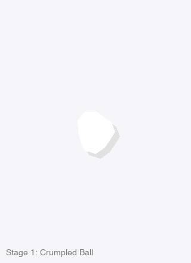
Stage 1: Crumpled Ball
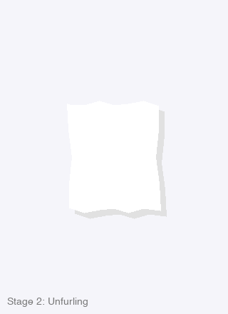
Stage 2: Unfurling
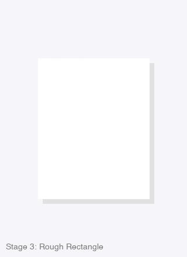
Stage 3: Rough Rectangle
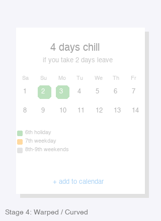
Stage 4: Warped / Curved
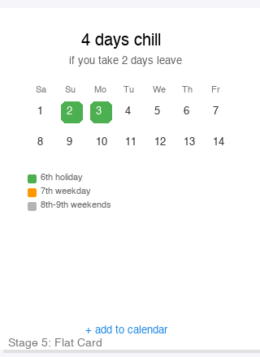
Stage 5: Flat Card
V1 How It Works
- CrumpleGeometry — single
Double progress (0→1) drives all visual properties: size, wiggle, shadow, float offset, rotation, content opacity.
- 4 Path Generators — one for each stage band:
crumpledBallPath: polygonal blob with wiggled radiusroughRectanglePath: jagged straight-line segmentswarpedRectanglePath: rounded rect with bezier wave edgessubtleWavePath: nearly perfect rounded rect with tiny top/bottom wave
- CreaseOverlay — Canvas-drawn diagonal creases + fine wrinkles, faded by progress. Clipped to the paper shape.
- PaperCardContent — LeaveHack calendar UI (header, mini grid, legend, CTA) with opacity keyed to progress.
- InteractiveCrumpleCard — tap toggles between progress 0 and 1 with spring animation.
~/Projects/PaperCrumblePrototype/Sources/PaperCrumblePrototype/PaperCrumblePrototypeApp.swift
Fidelity to Your Figma
- Stage 1 matches your "Paper crumble 1" — tight ball, polygonal facets, strong shadow
- Stage 2 matches "Paper crumble 2" — elongated, angular, still compact
- Stage 3 matches "Paper crumble 3" — horizontal rough rectangle with visible jagged edges
- Stage 4 matches "Paper crumble 4" — near-flat, curved top/bottom, content emerging
- Stage 5 matches "Paper crumble 5" — full card with subtle waviness, all UI visible